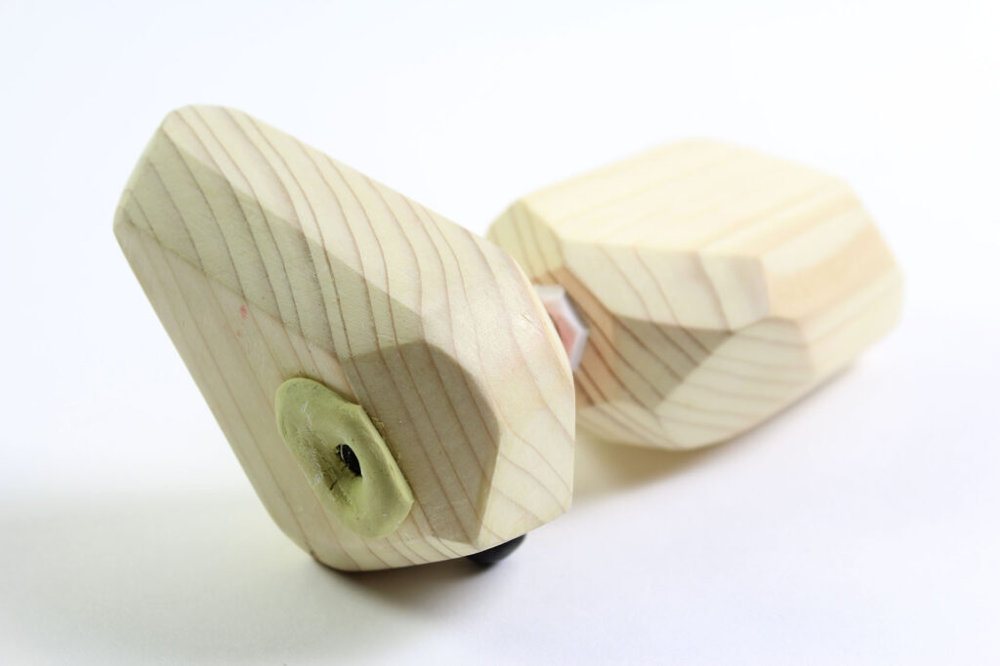
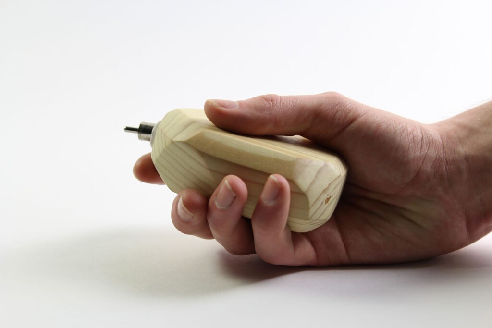
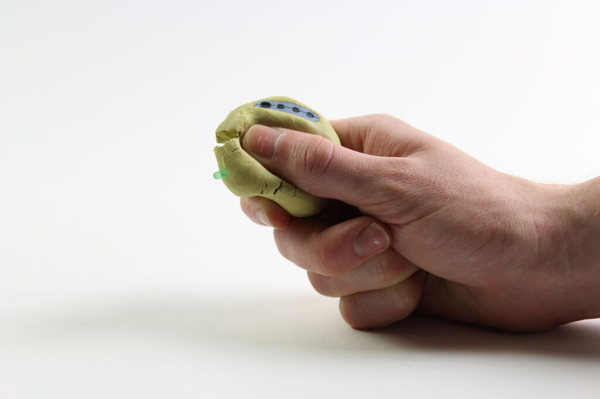
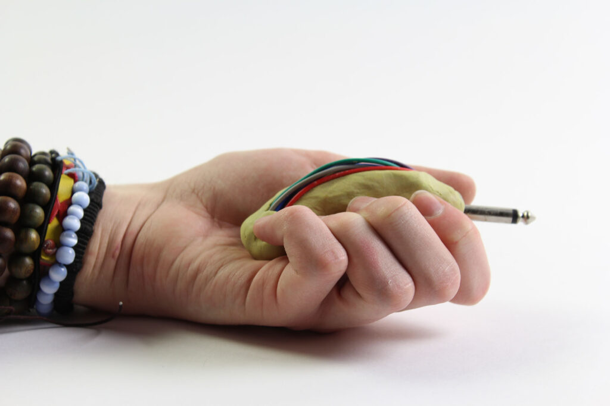
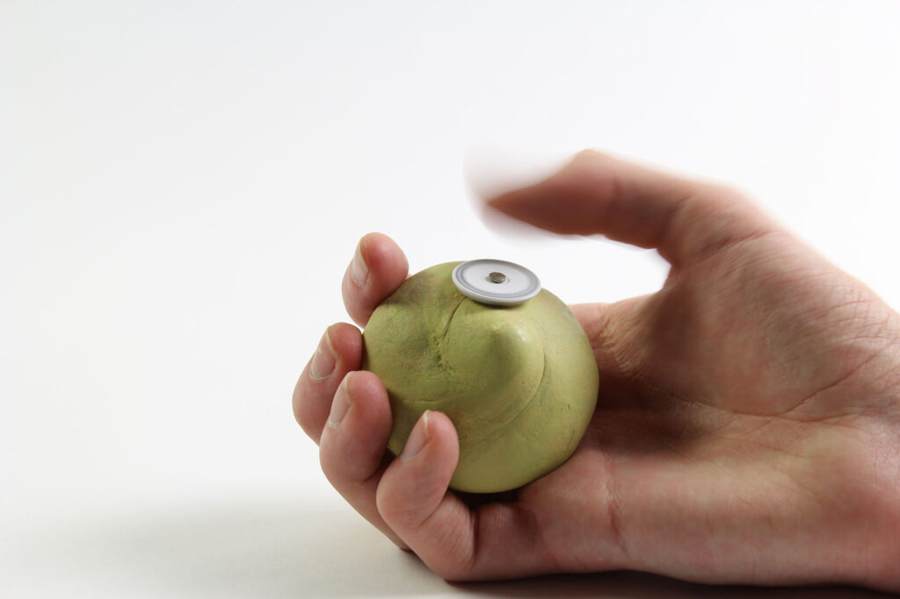
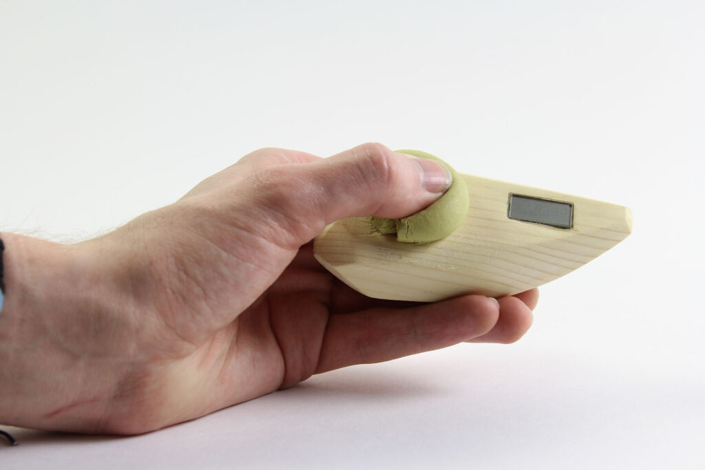

Hold Me (2016)
These objects have been produced as a speculation into the notion of a personal, handheld ‘tool’ with ambiguous functionality. The work is concerned with both the ergonomics and actions of the human hand, and intends to prompt the user to create their own ideas and narratives as to its intended function(s) and context(s). Specifically, the work aims to raise ideas in relation to an imagined future approach to design and technology, and how this would influence material and form.





